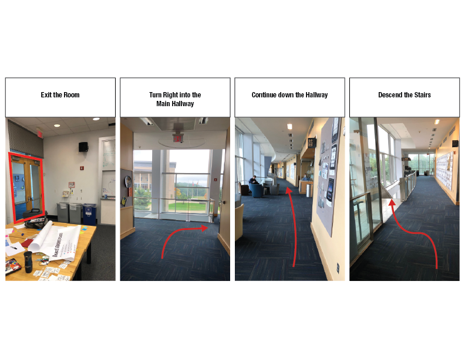
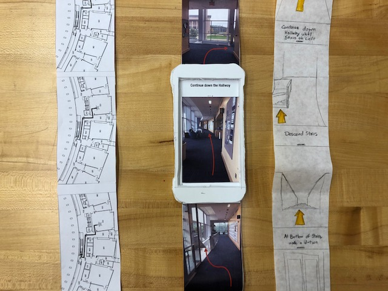

Design Development Phase Report
Our design is a picture based indoor navigation app that combines haptic feedback with visual instructions. The design provides a steady haptic heartbeat to reinforce instructions on a screen. This design allows users to find their way indoors using a variety of signals. Its combination of visual and haptic feedback allows the phone to provide the needed level of instruction.
Users navigating through new and complex spaces can intently watch the phone screen for precise instructions. People navigating through a simple or somewhat familiar space can slip the phone into their pocket and use the haptic feedback to reinforce their own intuition. This is a flexible system that allows the app to provide as much or as little help as needed.
Creating a system that provides both visual and haptic cues allows the app to sink into the background of the user’s journey. Once the destination is chosen, the user can hold the phone to their side and navigate based on the heartbeats. If the user gets lost or misinterprets the buzzes, the text and visual instructions can be quickly glanced at allowing the user to easily navigate back to the right track. While using the app, people can look up from their phones and absorb the area around them while still maintaining a correct path.
The user first sets their indoor destination using an initial input screen on a smartphone. The phone then calculates the best route and begins to pulse. The user can then slip their phone into their pocket or hold it at their side while it buzzes slightly. As they walk to their destination, the pulsing alerts them to new instructions. The user then looks down at the phone and views an arrow imposed overtop of the hallway space. They follow that arrow and the phone pulses pleasantly. If the user takes a wrong turn and walks down the wrong hallway, the buzzing pattern will change and grow louder as the distance to the correct route increases. This will alert the user to their incorrect course suggesting they should check the phone to reorient themselves.
Addressing User Needs
All the tested users managed to find their way to the specified location through a combination of using the images as displayed on the ‘screen’ and the buzzing, or haptic feedback. This demonstrated at least a basic ability to guide the user around an indoor space. One of our users also favored the haptic feedback and appreciated that they could use the navigation without having to hold onto their phone and keep it in front of them. They felt that this aligned well with a desire to navigate independently and not appear lost.
However, there are still some issues in discoverability and accessibility. For the first, even when specifically asked how they would interact with the screen, our users did not find the pull-down menu. This may have been an issue with the iconography, or it may have been an issue with the paper prototype itself; we haven’t conducted testing specifically on this aspect yet, which is a next step. The vibration for haptic feedback was another issue of signification, which may be resolved by an on-device prototype with actual vibration. For at least one user, we had to verbally explain that the ‘heartbeat’ pulse was a desirable state, and that the harsher buzz was a notification. Ideally, this could be taken care of by an onboarding process or by the visuals of the screen. If by visuals, we will have to also take into account users with low vision, and ensure that they also know the difference between the ‘on-track’ and ‘wrong way’ vibrations.
We have not yet tested a landing page or destination input screen, instead jumping right to navigation. While this is a significant area for designing the user experience, the process of getting to this point will also be key to the final form. This leads us to some of the accessibility issues: if we had an input screen, we might have remembered to include an option for wheelchair accessibility or other considerations. Because we did not, we are currently catering for people with full mobility. This greatly limits our potential user group.
We have not yet addressed re-routing if the user gets particularly far off-route, or explored other options for feedback (verbal directions, for example). These things will hopefully appear in later drafts to test.
Overall, while we meet the basic user needs for a certain user group, we also found a lot of areas that could use significant improvement to better fit user needs.
Design Decisions
One of the first decisions we made this phase was between visitor- and provider-centered indoor navigation projects. A provider-centered project would require a more complex solution and has an interesting twist on the approach - we don’t usually think of designing for providers. A visitor-centered project would focus more on the communication and navigation aspects we were interested in and may have easier-to-access users. In the end, we had four or fives ideas that fell into these two categories, and we used excellence voting to choose based on our individual priorities.
We narrowed which kinds of visuals were more valuable during user testing. Our paper prototype had three modes: it could navigate the test user through the same path using images, diagrams, or floor plans. We learned from our testing that the top-down floor plans (similar to Google Maps navigation) were not useful indoors. The images and diagrams were both more valuable to our users and we may include them both in our prototype.
Key Insights
Users will naturally want to interact with our navigation cues in different ways-- some will constantly look at the screen, while others will want to put it in their pocket and use the haptic feedback as cues to look for new directions. Our project needs to be able to adapt to all of these methods of interaction, regardless of the capabilities of the users.
Suspension of disbelief in paper prototype testing is important, but hard to maintain. There were several aspects of our prototype (the lack of actual haptic feedback, the lack of redirection, and the lack of a landing page/destination input) that brought our testers out of interactions with our prototype. From here on, if we do more testing, we’ll need to make sure to be able to model a more complete interaction, or spend more time making sure our testers understand the limits of our prototype beforehand.
The top-down blueprint-based view just doesn’t work as well for navigating indoor spaces as a pedestrian as well as first person views. You move on predetermined paths less often, and hallways don’t have names like streets do. It’s also much easier to leverage existing signage/landmarks with first person view photographs/diagrams.
Effort Distribution
We feel our efforts are fairly well distributed and match our expectations given commitment levels to the course. We all participated fairly equally in paper prototype creation and testing, including falling through on responsibilities with about equal frequency and importance. Louise took on migrating content to the website, and Coleman, MJ, and Kaitlyn were responsible for writing larger sections of the phase report to balance that.